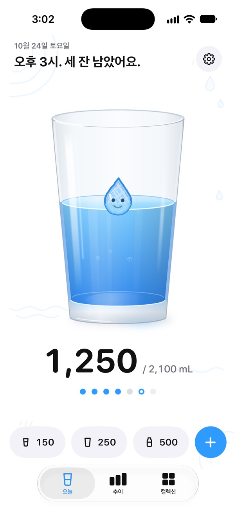
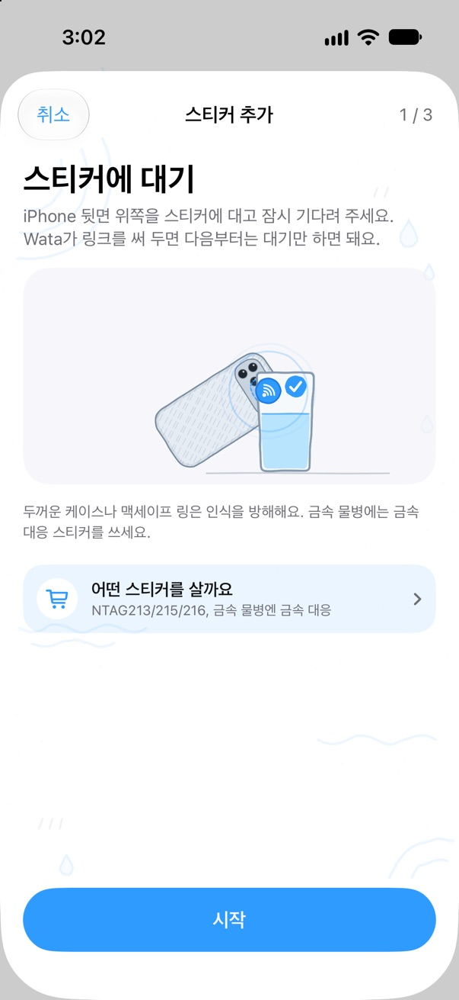
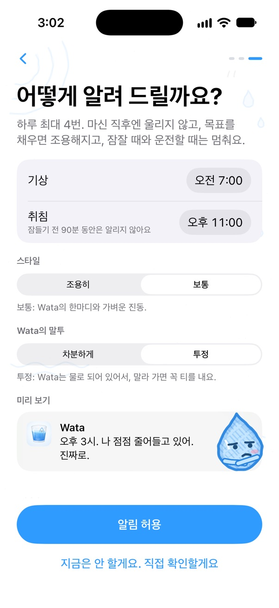
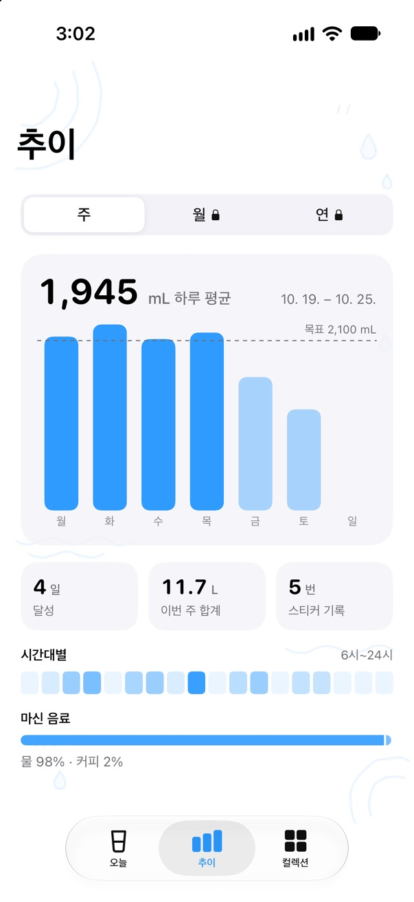
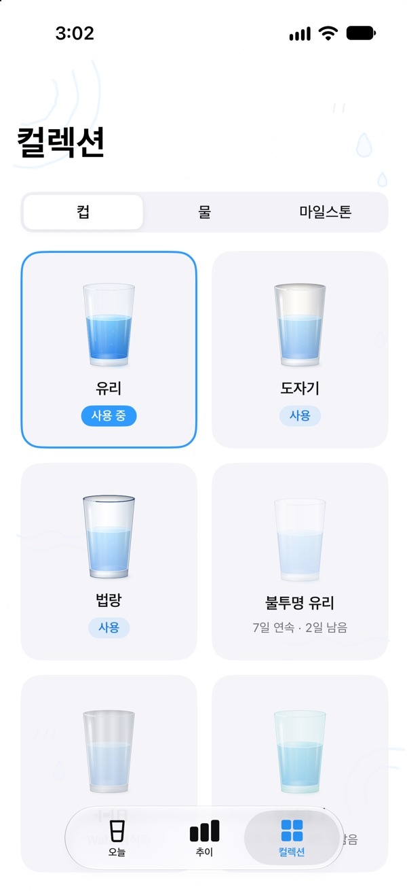
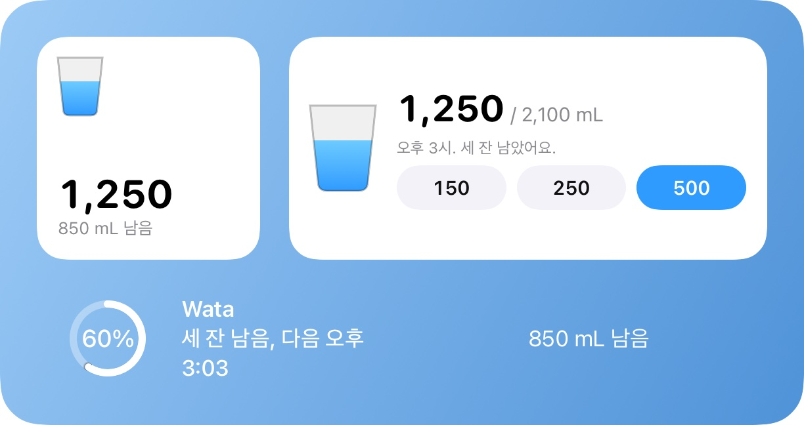
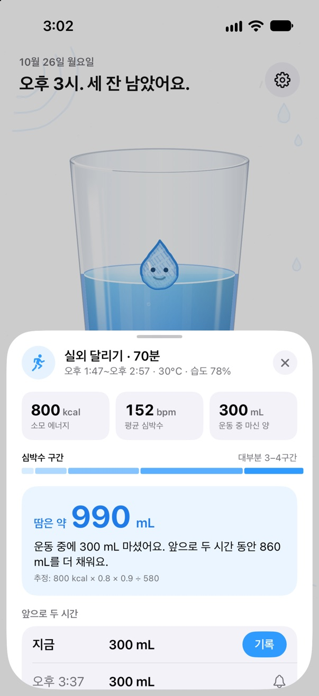

물병에 대면, 한 잔 기록.
물병에 NFC 스티커를 붙이세요. iPhone을 대고 나타나는 배너를 탭하면, 앱을 찾지 않아도 마신 물이 건강 앱에 들어가요. Wata는 시계가 아니라 오늘 남은 양을 보고 알려 줘요. 진짜 같은 물잔 속에 살고 있어서, 휴대폰을 흔들면 물도 출렁여요.
곧 App Store에 출시
iOS 18의 iPhone XS 이후 모델 · watchOS 11의 Apple Watch

물병마다 스티커 한 장
칩만 맞으면 어떤 NFC 스티커든 쓸 수 있어요. 커피 한 잔 값으로 여러 장 살 수 있어요. Wata에서 한 번 페어링하면, 그다음부터는 대기만 해도 물병 한 병이 기록돼요.
- 내 iPhone 모델의 어디를 스티커에 대야 하는지 Wata가 그림으로 보여 줘요. iPhone Duo는 먼저 접어 달라고 해요.
- 스티커 한 장은 용기 하나예요. 이름, 용량, 담긴 것.
- 몇 분 안에 같은 스티커가 다시 읽히면 기록하기 전에 물어봐요. 물병과 휴대폰이 같은 가방에 있어도 괜찮아요.
- 기록하고 10초 안에는 절반으로 바꾸거나 취소할 수 있어요.
- 가족이 컵 하나를 함께 쓸 수 있어요. iPhone마다 각자 기록돼요.
- iPhone은 화면이 켜져 있을 때 스티커를 읽고 배너를 탭하라고 해요. 단축어 자동화를 쓰면 탭 없이도 기록돼요.

마신 만큼 따라 움직이는 알림
Wata는 오늘 남은 양으로 알림을 계획하고, 어디서 기록했든 한 잔 마실 때마다 다시 계획해요.
- 마시고 45분 안에는 울리지 않아요. 목표를 채우면, 그리고 잠들기 전 90분 동안은 조용히.
- 하루에 몇 번까지만, 아침부터 저녁까지 고르게 나눠서, 매번 작은 한 잔만 부탁해요.
- 알림에서 바로 기록하거나 '나중에'를 탭하세요.
- 집중 모드에서 정각에만 알리거나 알리지 않게 할 수 있고, 회의 중 일시 정지도 고를 수 있어요.

Wata는 물로 만들어졌어요
물잔 속 물방울이 오늘 하루가 어떤지 보여 줘요. 아침엔 졸리고, 뒤처지면 목마르고, 몇 시간째 안 마시면 삐지고, 저녁에 많이 남으면 울기 직전이고, 목표를 채우면 꽃가루 속에서 폴짝폴짝 뛰어요.

차분하게오후 3시. 850 mL 남았어요. 이번엔 280 mL만.
투정오후 3시. 나 점점 줄어들고 있어. 진짜로.
투정, 두 번 무시당한 뒤알림이 별로 효과가 없나 봐. 조용히 증발하고 있을게.
- 말투는 두 가지예요. 시간과 남은 양을 알려 주는 차분한 말투, 그리고 죄책감을 자극해 한 잔 마시게 하는 마스코트의 투정.
- 투정 말투도 늘 작은 한 잔만 부탁해요. 목표를 채운 뒤, 잘 시간이 가까울 때, 너무 많이 너무 빨리 마셨을 때는 조용히 있어요.
- 알림마다 그때의 Wata 표정이 함께 와요.
- 문구는 언어마다 새로 썼어요. 번역이 아니에요.
건강 앱에, 손목에, 홈 화면에
마신 것은 모두 물로 건강 앱에 기록되고, 다른 앱이 그곳에 기록한 물도 한 번만 계산돼요. 목표는 체중과 운동, 원하면 지금 있는 곳의 더위까지 반영해 계산해요.
- Apple Watch: 링 하나와 빠른 양 세 개, Digital Crown. 시계 페이스용 컴플리케이션도 있어요.
- 홈 화면과 잠금 화면 위젯, 제어 센터 버튼, Siri와 단축어.
- 추이는 주 단위로. Wata 정식판에서는 월과 연, 한 해 돌아보기까지.
- 컬렉션: 마실 컵, 물의 질감, 그리고 매일 나눠 주는 게 아니라 노력해야 얻는 몇 개의 기념 메달.
- iPhone Duo: 펼치면 물잔 옆에 오늘의 계획, 테이블톱 자세에서는 큰 버튼들이 나란히.




운동 후엔 흘린 땀만큼 다시 마시기
운동이 건강 앱에 기록되면, Wata는 소모한 에너지와 운동할 때의 날씨로 땀의 양을 추정해 오늘 목표에 더하고, 다시 마실 양을 다음 두 시간에 나눠요.
- 40분마다 최대 300 mL. 길거나 더운 날의 운동 뒤에는 스포츠음료도 권해요.
- 매주 같은 시간에 하는 운동이라면 시작 전에 알려 줘요.
- Wata 정식판: 단축어 자동화로 운동 중 알림(흘린 땀보다 많이 권하지 않아요), 추정치를 나에게 맞추는 땀 테스트, 잠금 화면의 회복 시간.

무료로, 또는 한 번 구입으로
Wata는 무료로 쓸 수 있고 광고는 하루에 많아야 한 번이에요. 한 번 결제하면 광고가 사라지고 모든 기능이 열려요. 가족 모두에게.
Wata
무료
- 기록, 알림, 건강 앱과 Apple Watch, 위젯, Siri
- 스티커 한 장
- 주 단위 추이, 운동 후 조언
- 광고는 하루에 많아야 한 번: 처음 3일은 없고, 기록하는 중에는 절대 나오지 않아요
Wata 정식판
US$2.99 한 번
- 광고 없음, 영원히
- 스티커는 원하는 만큼
- 모든 기록: 월, 연, 한 해 돌아보기
- 모든 음료, 모든 컵, 모든 물의 질감
- 운동 중 알림과 땀 테스트
- 가족 공유 지원, 구독 아님
Wata 1의 업데이트는 모두 무료이고, 무료 버전의 광고가 늘어나는 일도 없어요. 가격은 App Store에 표시되는 지역 가격이 적용돼요.
내가 마신 물은 나만의 것
마신 기록은 내 기기와 건강 앱에 저장되고, 건강 앱은 iCloud에도 보관할 수 있어요. 개발자는 이 기록을 받지 않아요. 건강에 관한 어떤 정보도 무료 버전의 광고 네트워크로 가지 않아요.